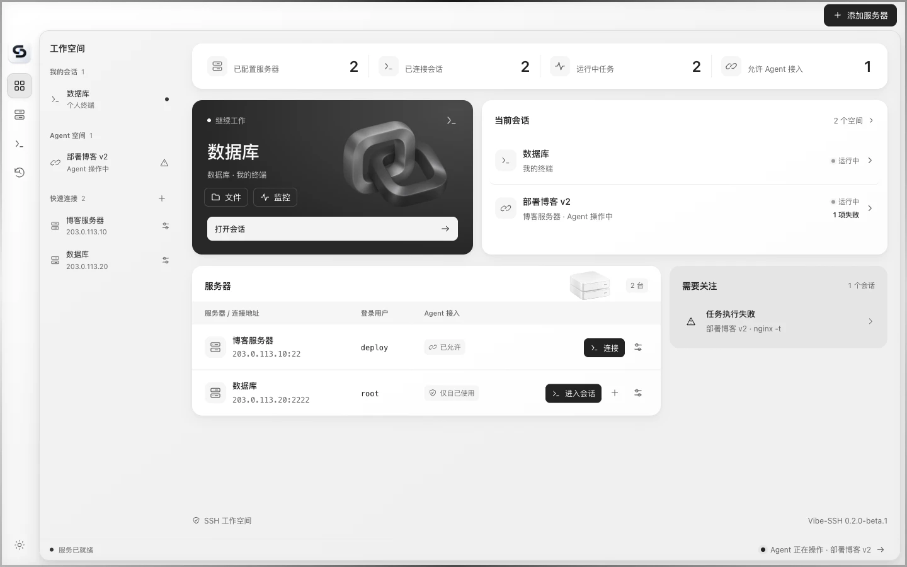
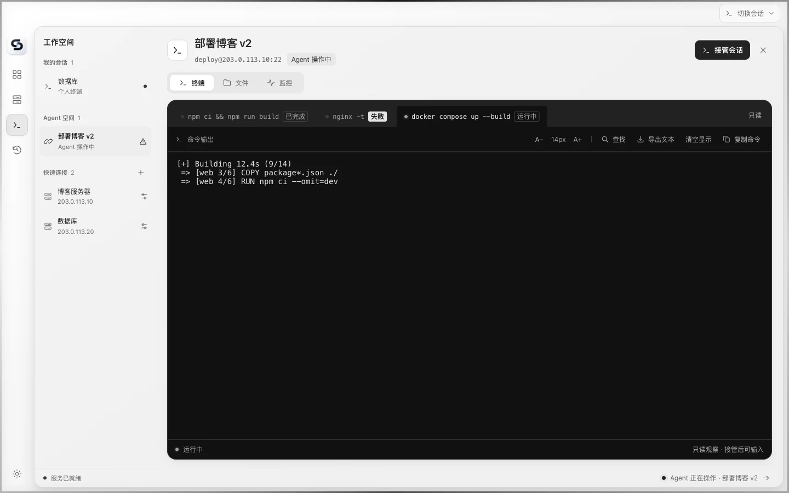

连接、传文件、看资源
打开 SSH 终端，浏览和编辑远端文件。大文件或文件夹传到一半，也能回来接着传。Linux 服务器的 CPU、内存和磁盘用量在监控页查看。

开源 macOS SSH 客户端
终端、SFTP 和服务器监控都在一个工作台。
用 Skill 让 Agent 部署，随时查看进度或接管。

打开 SSH 终端，浏览和编辑远端文件。大文件或文件夹传到一半，也能回来接着传。Linux 服务器的 CPU、内存和磁盘用量在监控页查看。

按服务器授权 Agent。它有自己的连接，你可以在自己的终端继续工作，也能查看它的命令和输出。
vibe-ssh skill
接管会立即阻止 Agent 提交新的操作。你可以查看故障、主动中断任务，或在检查后把控制权归还。
首次启动会自动为 Codex 和 Claude Code 安装 Vibe-SSH Skill，并配置配套命令行。应用升级时会同步更新。
添加主机、核对 SSH 指纹，再为需要协作的服务器开启 Agent 接入。
保持应用运行，告诉 Agent 要在哪台服务器做什么。实时查看输出和任务历史，需要时直接接管。
~/.agents/skills/vibe-ssh~/.claude/skills/vibe-ssh~/.local/bin/vibe-ssh运行 ~/.local/bin/vibe-ssh status 可检查客户端连接。Codex 已完成独立部署与故障恢复验收。